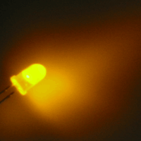
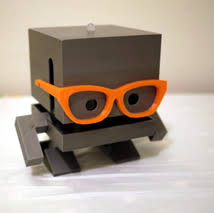

| Command | Options | What should it do? |
|---|---|---|
|  Cycle the Lights | JSON Array of colors and times | Cycle the led on top of the TJBot through the selected colors for the selected duration |
 Wave | None | Wave tjBot's arm |
 Check Sentiment | None (perhaps later pick a topic) | Perform Sentiment Analysis in Twitter Perhaps add code to send feedback back to browser on what TJBot is currently doing. |
 Have a Conversation | None (perhaps later pick a conversation) | Use microphone and speaker on tjBot to converse Add support to echo conversation to browser Add code to change led color based on ready to listen or talking. Need to change speaker to USB to do this. |
Change LED Color with your voice | None | Use microphone on tjBot to change the color of the LED |
|  Factoids | None | Use microphone and speaker on tjBot to get facts about famous people |